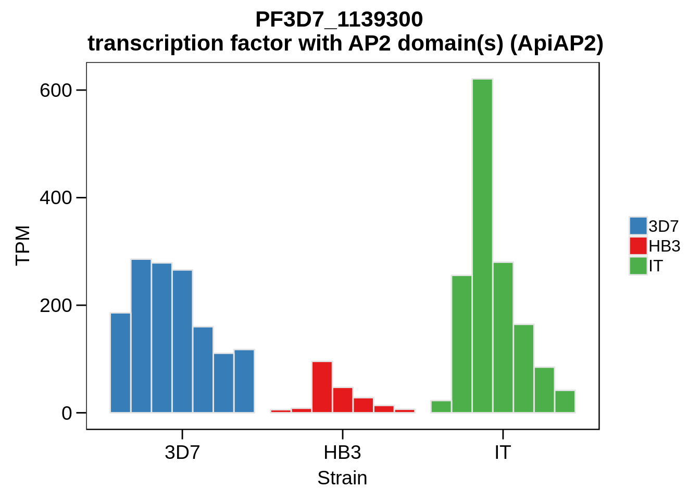
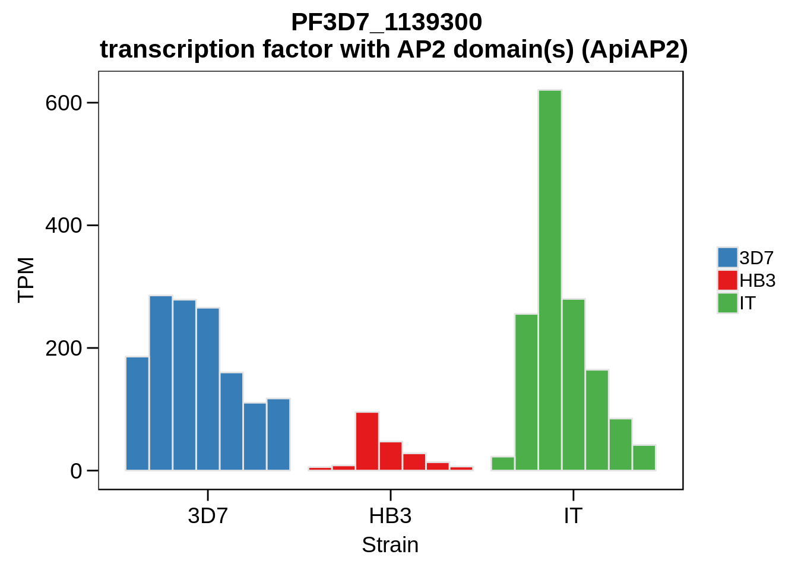

Differential transcript expression
Philipp Ross
2018-09-25
Last updated: 2018-10-05
Code version: 5584d21
Process data
First we need to actually calculate the differentially expressed genes. We’ll need to import some data first:
core_genes <- readr::read_tsv("../data/gene_lists/core_pf3d7_genes.txt",col_names=F)$X1
x3d7exp <- readRDS("../output/neighboring_genes/gene_reduced_3d7_abund.rds")
xhb3exp <- readRDS("../output/neighboring_genes/gene_reduced_hb3_abund.rds")
xitexp <- readRDS("../output/neighboring_genes/gene_reduced_it_abund.rds")
abund <- dplyr::bind_rows(x3d7exp,xhb3exp,xitexp)
rm(x3d7exp,xhb3exp,xitexp)
# unique gene IDs
ug <- unique(abund$gene_id)
# Create data frame of genes that are "on" in each strain
detected <- abund %>%
dplyr::group_by(gene_id, strain) %>%
dplyr::summarise(n = sum(TPM >= 5)) %>%
dplyr::mutate(on = ifelse(n > 0, 1, 0)) %>%
dplyr::ungroup() %>%
dplyr::select(-n)
# What genes are "on" in all strains
onall <- detected %>%
dplyr::filter(on == 1) %>%
dplyr::group_by(gene_id) %>%
dplyr::summarise(count = length(unique(strain))) %>%
dplyr::filter(count == 3) %$%
gene_id
# What genes are "off" in all strains
offall <- detected %>%
dplyr::filter(on == 0) %>%
dplyr::group_by(gene_id) %>%
dplyr::summarise(count = length(unique(strain))) %>%
dplyr::filter(count == 3) %$%
gene_id
on3d7 <- detected %>% filter(strain == "3d7" & on == 1 & gene_id %in% core_genes) %$% gene_id
onhb3 <- detected %>% filter(strain == "hb3" & on == 1& gene_id %in% core_genes) %$% gene_id
onit <- detected %>% filter(strain == "it" & on == 1 & gene_id %in% core_genes) %$% gene_id
on3d7hb3 <- intersect(on3d7,onhb3)
on3d7it <- intersect(on3d7,onit)
onhb3it <- intersect(onhb3,onit)
comparable <- intersect(core_genes, onall)Now we can look to calculate the differentially expressed genes.
# First calculate differential expression
diff_exp_3d7hb3 <- abund %>%
filter(strain %in% c("3d7", "hb3") & gene_id %in% comparable) %>%
group_by(gene_id) %>%
do(broom::tidy(t.test(log2(TPM+1)~strain,data=.))) %>%
dplyr::ungroup() %>%
dplyr::select(gene_id, p.value)
diff_exp_3d7hb3$strain_pair <- "3d7-hb3"
diff_exp_3d7it <- abund %>%
filter(strain %in% c("3d7", "it") & gene_id %in% comparable) %>%
group_by(gene_id) %>%
do(broom::tidy(t.test(log2(TPM+1)~strain,data=.))) %>%
dplyr::ungroup() %>%
dplyr::select(gene_id, p.value)
diff_exp_3d7it$strain_pair <- "3d7-it"
diff_exp_hb3it <- abund %>%
filter(strain %in% c("hb3", "it") & gene_id %in% comparable) %>%
group_by(gene_id) %>%
do(broom::tidy(t.test(log2(TPM+1)~strain,data=.))) %>%
dplyr::ungroup() %>%
dplyr::select(gene_id, p.value)
diff_exp_hb3it$strain_pair <- "hb3-it"
diff_exp <- rbind(diff_exp_3d7hb3, diff_exp_3d7it, diff_exp_hb3it)
diff3d7hb3 <- diff_exp %>% filter(strain_pair == "3d7-hb3") %>% separate(strain_pair, into = c("strain1","strain2"), sep = "-")
diff3d7it <- diff_exp %>% filter(strain_pair == "3d7-it") %>% separate(strain_pair, into = c("strain1","strain2"), sep = "-")
diffhb3it <- diff_exp %>% filter(strain_pair == "hb3-it") %>% separate(strain_pair, into = c("strain1","strain2"), sep = "-")
diff3d7hb3$qvalue <- qvalue::qvalue(diff3d7hb3$p.value)$qvalues
diff3d7it$qvalue <- qvalue::qvalue(diff3d7it$p.value)$qvalues
diffhb3it$qvalue <- qvalue::qvalue(diffhb3it$p.value)$qvaluesAnd finally, we can plot the results and write everything to a file:
# Create a scatter plot comparing 3D7 to HB3
plot_3d7_hb3_scatter <- function() {
overunder <- abund %>%
filter(gene_id %in% on3d7hb3) %>%
group_by(gene_id, strain) %>%
summarise(m = mean(TPM)) %>%
spread(strain, m) %>%
mutate(`3d7_over_hb3` = log2(`3d7` / hb3)) %>%
dplyr::select(-`3d7`, -hb3, -it) %>%
inner_join(diff3d7hb3, by = "gene_id") %>%
gather(strain1, strain2,-`3d7_over_hb3`,-gene_id,-p.value,-qvalue) %>%
dplyr::select(-strain1) %>%
dplyr::rename(strain=strain2)
df <- abund %>%
filter(gene_id %in% on3d7hb3) %>%
group_by(gene_id, strain) %>%
summarise(m = mean(TPM)) %>%
ungroup() %>%
filter(strain %in% c("3d7","hb3"))
df <- inner_join(df, overunder, by = c("gene_id", "strain"))
df %>%
spread(strain, m) %>%
ggplot(aes(x=hb3,y=`3d7`,label=gene_id)) +
geom_point(color="grey80") +
geom_point(data = subset(df, (`3d7_over_hb3` <= -2) & qvalue < 0.05) %>% ungroup() %>% spread(strain, m), color = "#E41A1C") +
geom_point(data = subset(df, (`3d7_over_hb3` >= 2) & qvalue < 0.05) %>% ungroup() %>% spread(strain, m), color = "#377EB8") +
ylab("Log10(TPM) 3D7") +
xlab("Log10(TPM) HB3") +
scale_x_continuous(trans="log10",breaks=c(1,10,100,1000,10000),labels=trans_format('log10',math_format(10^.x)),limits=c(1,10000)) +
scale_y_continuous(trans="log10",breaks=c(1,10,100,1000,10000),labels=trans_format('log10',math_format(10^.x)),limits=c(1,10000)) +
theme(axis.line.x=element_line(size=1),
axis.line.y=element_line(size=1),
axis.text=element_text(size=20),
axis.title=element_text(size=20),
axis.ticks.x=element_line(colour="black",size=1),
axis.ticks.y=element_line(colour="black",size=1))
}
# Create a scatter plot comparing 3D7 to IT
plot_3d7_it_scatter <- function() {
overunder <- abund %>%
filter(gene_id %in% on3d7it) %>%
group_by(gene_id, strain) %>%
summarise(m = mean(TPM)) %>%
spread(strain, m) %>%
mutate(`3d7_over_it` = log2(`3d7` / it)) %>%
dplyr::select(-`3d7`, -hb3, -it) %>%
inner_join(diff3d7it, by = "gene_id") %>%
gather(strain1, strain2,-`3d7_over_it`,-gene_id,-p.value,-qvalue) %>%
dplyr::select(-strain1) %>%
dplyr::rename(strain=strain2)
df <- abund %>%
filter(gene_id %in% on3d7it) %>%
group_by(gene_id, strain) %>%
summarise(m = mean(TPM)) %>%
ungroup() %>%
filter(strain %in% c("3d7","it"))
df <- inner_join(df, overunder, by = c("gene_id", "strain"))
df %>%
spread(strain, m) %>%
ggplot(aes(x=it,y=`3d7`,label=gene_id)) +
geom_point(color="grey80") +
#geom_point(data = subset(df, (`3d7_over_it` <= -2) & qvalue < 0.05) %>% ungroup() %>% spread(strain, m), color = "#4DAF4A") +
geom_point(data = subset(df, (`3d7_over_it` >= 2) & qvalue < 0.05) %>% ungroup() %>% spread(strain, m), color = "#377EB8") +
ylab("Log10(TPM) 3D7") +
xlab("Log10(TPM) IT") +
scale_x_continuous(trans="log10",breaks=c(1,10,100,1000,10000),labels=trans_format('log10',math_format(10^.x)),limits=c(1,10000)) +
scale_y_continuous(trans="log10",breaks=c(1,10,100,1000,10000),labels=trans_format('log10',math_format(10^.x)),limits=c(1,10000)) +
theme(axis.line.x=element_line(size=1),
axis.line.y=element_line(size=1),
axis.text=element_text(size=20),
axis.title=element_text(size=20),
axis.ticks.x=element_line(colour="black",size=1),
axis.ticks.y=element_line(colour="black",size=1))
}
# Create a scatter plot comparing HB3 to IT
plot_hb3_it_scatter <- function() {
overunder <- abund %>%
filter(gene_id %in% onhb3it) %>%
group_by(gene_id, strain) %>%
summarise(m = mean(TPM)) %>%
spread(strain, m) %>%
mutate(hb3_over_it = log2(hb3 / it)) %>%
dplyr::select(-`3d7`, -hb3, -it) %>%
inner_join(diffhb3it, by = "gene_id") %>%
gather(strain1, strain2,-hb3_over_it,-gene_id,-p.value,-qvalue) %>%
dplyr::select(-strain1) %>%
dplyr::rename(strain=strain2)
df <- abund %>%
filter(gene_id %in% onhb3it) %>%
group_by(gene_id, strain) %>%
summarise(m = mean(TPM)) %>%
ungroup() %>%
filter(strain %in% c("hb3","it"))
df <- inner_join(df, overunder, by = c("gene_id", "strain"))
df %>%
spread(strain, m) %>%
ggplot(aes(x=hb3,y=it,label=gene_id)) +
geom_point(color="grey80") +
geom_point(data = subset(df, (hb3_over_it <= -2) & qvalue < 0.05) %>% ungroup() %>% spread(strain, m), color = "#E41A1C") +
geom_point(data = subset(df, (hb3_over_it >= 2) & qvalue < 0.05) %>% ungroup() %>% spread(strain, m), color = "#4DAF4A") +
ylab("Log10(TPM) HB3") +
xlab("Log10(TPM) IT") +
scale_x_continuous(trans="log10",breaks=c(1,10,100,1000,10000),labels=trans_format('log10',math_format(10^.x)),limits=c(1,10000)) +
scale_y_continuous(trans="log10",breaks=c(1,10,100,1000,10000),labels=trans_format('log10',math_format(10^.x)),limits=c(1,10000)) +
theme(axis.line.x=element_line(size=1),
axis.line.y=element_line(size=1),
axis.text=element_text(size=20),
axis.title=element_text(size=20),
axis.ticks.x=element_line(colour="black",size=1),
axis.ticks.y=element_line(colour="black",size=1))
}g <- plot_3d7_hb3_scatter()
ggsave(plot=g,filename="../output/differential_expression/3d7_hb3_scatter.svg")
ggsave(plot=g,filename="../output/differential_expression/3d7_hb3_scatter.png")
print(g)Manuscript numbers
How many differentially expressed genes do we find?
overunder <- abund %>%
filter(gene_id %in% on3d7hb3) %>%
group_by(gene_id, strain) %>%
summarise(m = mean(TPM)) %>%
spread(strain, m) %>%
mutate(`3d7_over_hb3` = log2(`3d7` / hb3)) %>%
dplyr::select(-`3d7`, -hb3, -it) %>%
inner_join(diff3d7hb3, by = "gene_id") %>%
gather(strain1, strain2,-`3d7_over_hb3`,-gene_id,-p.value,-qvalue) %>%
dplyr::select(-strain1) %>%
dplyr::rename(strain=strain2)
df <- abund %>%
filter(gene_id %in% on3d7hb3) %>%
group_by(gene_id, strain) %>%
summarise(m = mean(TPM)) %>%
ungroup() %>%
filter(strain %in% c("3d7","hb3"))
df <- inner_join(df, overunder, by = c("gene_id", "strain"))
print("Number of genes overexpressed in HB3:")[1] "Number of genes overexpressed in HB3:"[1] 28readr::write_lines(x=unique(subset(df, (`3d7_over_hb3` <= -2) & qvalue < 0.05)$gene_id),path="../output/differential_expression/hb3_over_3d7_genes.txt")
print("Number of genes overexpressed in 3D7:")[1] "Number of genes overexpressed in 3D7:"[1] 408readr::write_lines(x=unique(subset(df, (`3d7_over_hb3` >= 2) & qvalue < 0.05)$gene_id),path="../output/differential_expression/3d7_over_hb3_genes.txt")
###########################################################
overunder <- abund %>%
filter(gene_id %in% on3d7it) %>%
group_by(gene_id, strain) %>%
summarise(m = mean(TPM)) %>%
spread(strain, m) %>%
mutate(`3d7_over_it` = log2(`3d7` / it)) %>%
dplyr::select(-`3d7`, -hb3, -it) %>%
inner_join(diff3d7it, by = "gene_id") %>%
gather(strain1, strain2,-`3d7_over_it`,-gene_id,-p.value,-qvalue) %>%
dplyr::select(-strain1) %>%
dplyr::rename(strain=strain2)
df <- abund %>%
filter(gene_id %in% on3d7it) %>%
group_by(gene_id, strain) %>%
summarise(m = mean(TPM)) %>%
ungroup() %>%
filter(strain %in% c("3d7","it"))
df <- inner_join(df, overunder, by = c("gene_id", "strain"))
print("Number of genes overexpressed in IT:")[1] "Number of genes overexpressed in IT:"[1] 0readr::write_lines(x=unique(subset(df, (`3d7_over_it` <= -2) & qvalue < 0.05)$gene_id),path="../output/differential_expression/it_over_3d7_genes.txt")
print("Number of genes overexpressed in 3D7:")[1] "Number of genes overexpressed in 3D7:"[1] 129readr::write_lines(x=unique(subset(df, (`3d7_over_it` >= 2) & qvalue < 0.05)$gene_id),path="../output/differential_expression/3d7_over_it_genes.txt")
###########################################################
overunder <- abund %>%
filter(gene_id %in% onhb3it) %>%
group_by(gene_id, strain) %>%
summarise(m = mean(TPM)) %>%
spread(strain, m) %>%
mutate(`hb3_over_it` = log2(`hb3` / it)) %>%
dplyr::select(-`3d7`, -hb3, -it) %>%
inner_join(diffhb3it, by = "gene_id") %>%
gather(strain1, strain2,-`hb3_over_it`,-gene_id,-p.value,-qvalue) %>%
dplyr::select(-strain1) %>%
dplyr::rename(strain=strain2)
df <- abund %>%
filter(gene_id %in% onhb3it) %>%
group_by(gene_id, strain) %>%
summarise(m = mean(TPM)) %>%
ungroup() %>%
filter(strain %in% c("hb3","it"))
df <- inner_join(df, overunder, by = c("gene_id", "strain"))
print("Number of genes overexpressed in HB3:")[1] "Number of genes overexpressed in HB3:"[1] 161readr::write_lines(x=unique(subset(df, (`hb3_over_it` <= -2) & qvalue < 0.05)$gene_id),path="../output/differential_expression/it_over_hb3_genes.txt")
print("Number of genes overexpressed in IT:")[1] "Number of genes overexpressed in IT:"[1] 34Now run this from the command line:
Plot the abundances for the following ApiAP2 transcripts…
what <- c("PF3D7_0604100","PF3D7_1222400","PF3D7_1408200",
"PF3D7_1143100","PF3D7_0516800","PF3D7_1466400",
"PF3D7_0420300","PF3D7_0613800","PF3D7_0802100",
"PF3D7_1107800","PF3D7_1139300","PF3D7_1239200",
"PF3D7_1317200","PF3D7_1342900","PF3D7_1449500")
for (w in what) {
g <- plot_strain_abundances(abund,w)
ggsave(plot=g,filename=paste0("../output/differential_expression/",w,".svg"),height=4,width=4)
ggsave(plot=g,filename=paste0("../output/differential_expression/",w,".png"),height=4,width=4)
print(g)
} 

Session Information
R version 3.5.0 (2018-04-23)
Platform: x86_64-pc-linux-gnu (64-bit)
Running under: Gentoo/Linux
Matrix products: default
BLAS: /usr/local/lib64/R/lib/libRblas.so
LAPACK: /usr/local/lib64/R/lib/libRlapack.so
locale:
[1] LC_CTYPE=en_US.UTF-8 LC_NUMERIC=C
[3] LC_TIME=en_US.UTF-8 LC_COLLATE=en_US.UTF-8
[5] LC_MONETARY=en_US.UTF-8 LC_MESSAGES=en_US.UTF-8
[7] LC_PAPER=en_US.UTF-8 LC_NAME=C
[9] LC_ADDRESS=C LC_TELEPHONE=C
[11] LC_MEASUREMENT=en_US.UTF-8 LC_IDENTIFICATION=C
attached base packages:
[1] parallel stats4 stats graphics grDevices utils datasets
[8] methods base
other attached packages:
[1] gdtools_0.1.7
[2] bindrcpp_0.2.2
[3] BSgenome.Pfalciparum.PlasmoDB.v24_1.0
[4] BSgenome_1.48.0
[5] rtracklayer_1.40.6
[6] Biostrings_2.48.0
[7] XVector_0.20.0
[8] GenomicRanges_1.32.7
[9] GenomeInfoDb_1.16.0
[10] org.Pf.plasmo.db_3.6.0
[11] AnnotationDbi_1.42.1
[12] IRanges_2.14.12
[13] S4Vectors_0.18.3
[14] Biobase_2.40.0
[15] BiocGenerics_0.26.0
[16] scales_1.0.0
[17] cowplot_0.9.3
[18] magrittr_1.5
[19] forcats_0.3.0
[20] stringr_1.3.1
[21] dplyr_0.7.6
[22] purrr_0.2.5
[23] readr_1.1.1
[24] tidyr_0.8.1
[25] tibble_1.4.2
[26] ggplot2_3.0.0
[27] tidyverse_1.2.1
loaded via a namespace (and not attached):
[1] nlme_3.1-137 bitops_1.0-6
[3] matrixStats_0.54.0 lubridate_1.7.4
[5] bit64_0.9-7 httr_1.3.1
[7] rprojroot_1.3-2 tools_3.5.0
[9] backports_1.1.2 R6_2.3.0
[11] DBI_1.0.0 lazyeval_0.2.1
[13] colorspace_1.3-2 withr_2.1.2
[15] tidyselect_0.2.4 bit_1.1-14
[17] compiler_3.5.0 git2r_0.23.0
[19] cli_1.0.1 rvest_0.3.2
[21] xml2_1.2.0 DelayedArray_0.6.6
[23] labeling_0.3 digest_0.6.17
[25] Rsamtools_1.32.3 svglite_1.2.1
[27] rmarkdown_1.10 R.utils_2.7.0
[29] pkgconfig_2.0.2 htmltools_0.3.6
[31] rlang_0.2.2 readxl_1.1.0
[33] rstudioapi_0.8 RSQLite_2.1.1
[35] bindr_0.1.1 jsonlite_1.5
[37] BiocParallel_1.14.2 R.oo_1.22.0
[39] RCurl_1.95-4.11 GenomeInfoDbData_1.1.0
[41] Matrix_1.2-14 Rcpp_0.12.19
[43] munsell_0.5.0 R.methodsS3_1.7.1
[45] stringi_1.2.4 yaml_2.2.0
[47] SummarizedExperiment_1.10.1 zlibbioc_1.26.0
[49] qvalue_2.12.0 plyr_1.8.4
[51] grid_3.5.0 blob_1.1.1
[53] crayon_1.3.4 lattice_0.20-35
[55] splines_3.5.0 haven_1.1.2
[57] hms_0.4.2 knitr_1.20
[59] pillar_1.3.0 reshape2_1.4.3
[61] XML_3.98-1.16 glue_1.3.0
[63] evaluate_0.11 modelr_0.1.2
[65] cellranger_1.1.0 gtable_0.2.0
[67] assertthat_0.2.0 broom_0.5.0
[69] GenomicAlignments_1.16.0 memoise_1.1.0
[71] workflowr_1.1.1 This R Markdown site was created with workflowr